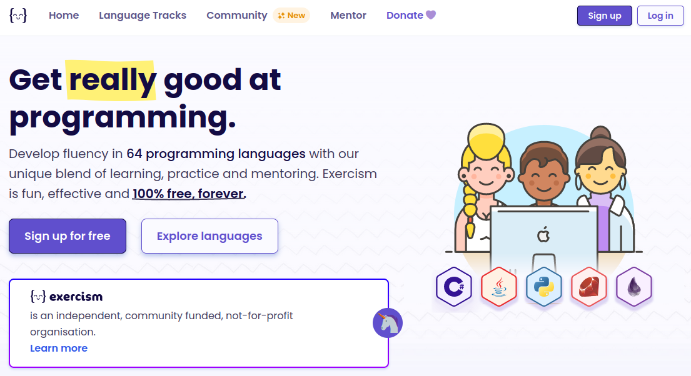
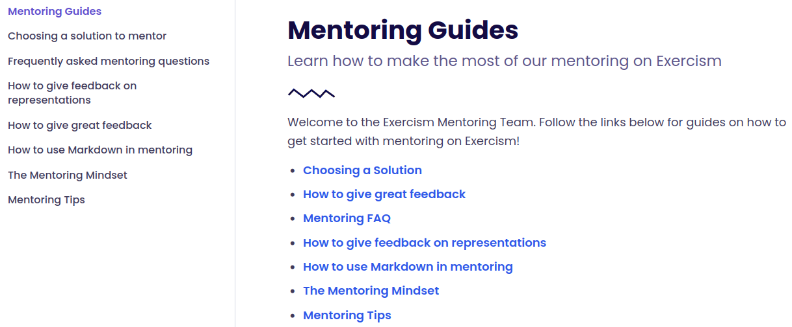
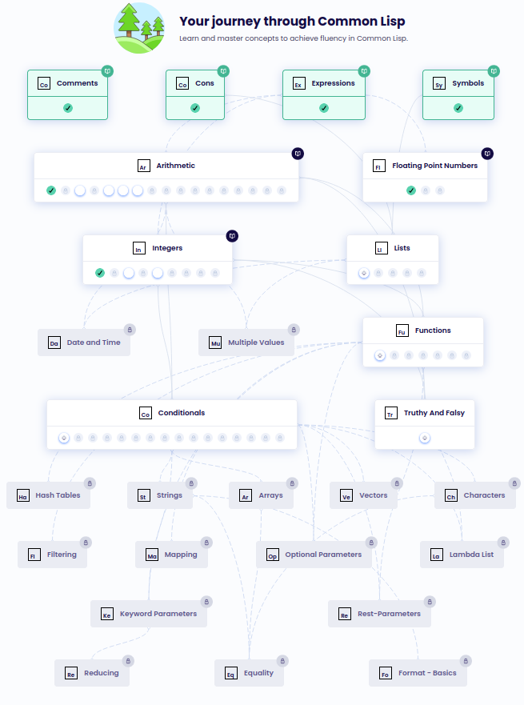
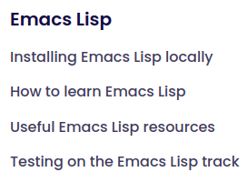
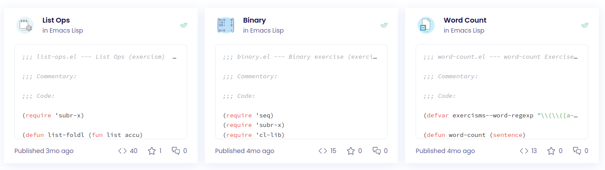
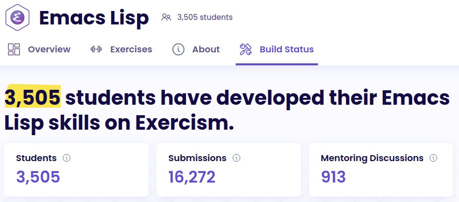
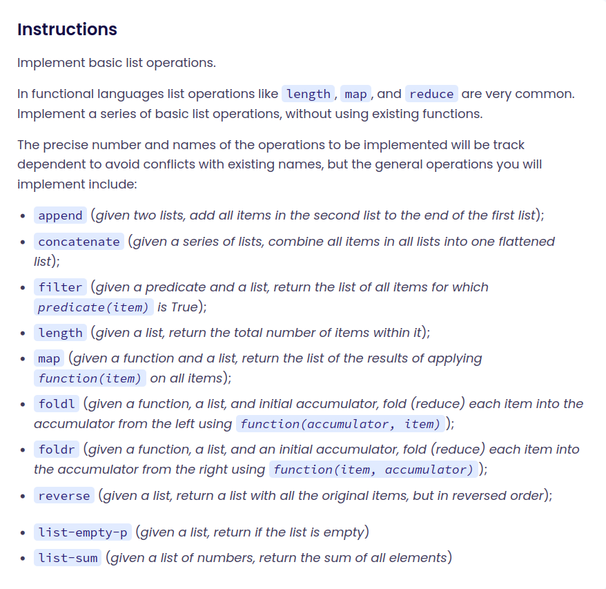
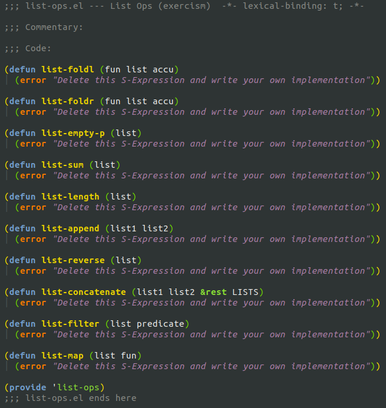
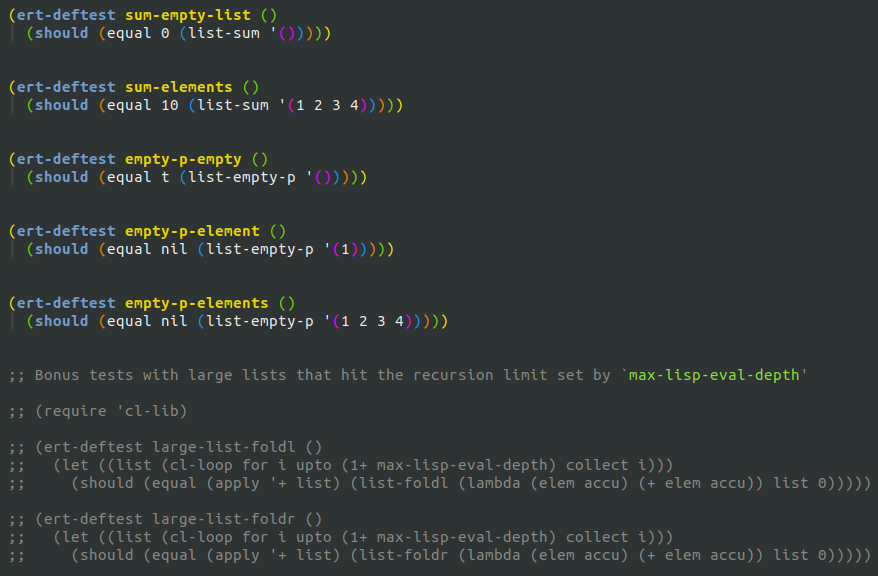

The goal of a language track on Exercism is to give people a way to achieve a high level of fluency at a low level of proficiency.
We're aiming for fluency in the syntax, idioms, and the standard library of the language.





list-ops
├── .docs
│ ├── hints.md
│ ├── instructions.append.md
│ └── instructions.md
├── list-ops.el
├── list-ops-test.el
└── .meta
├── config.json
├── example.el
└── tests.toml


